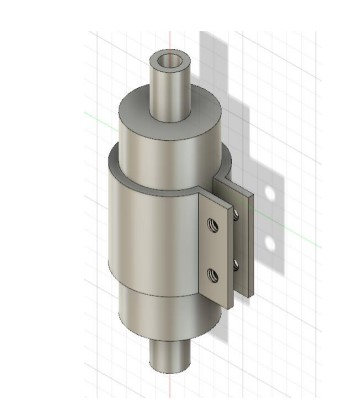
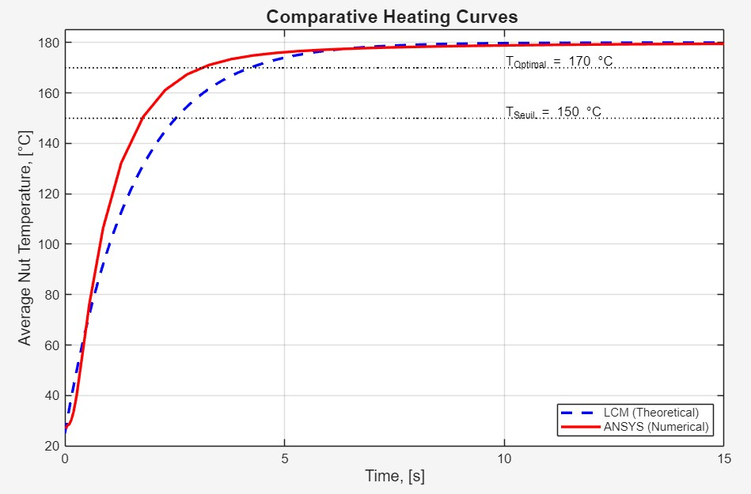
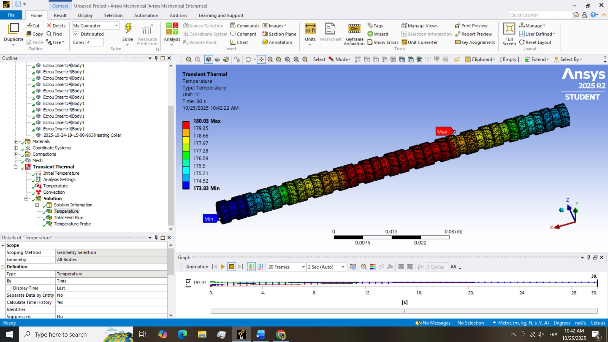
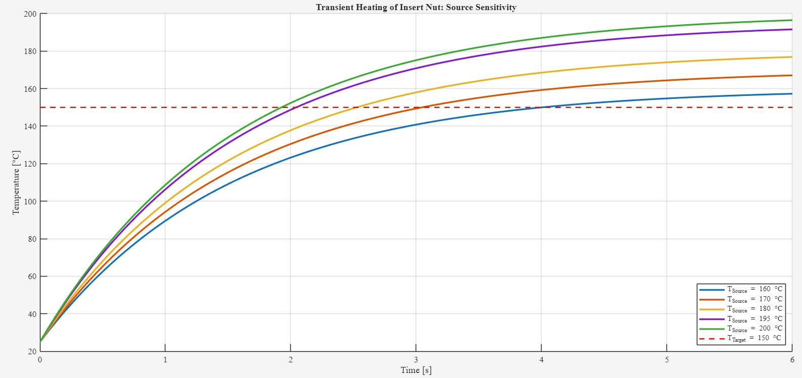
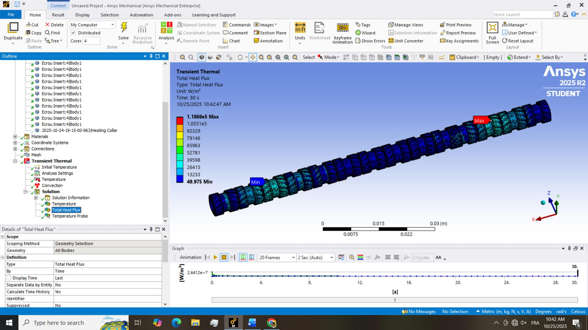

Analyse thermique transitoire pour l’optimisation du procédé : étude comparative du modèle à capacité concentrée et de la simulation par éléments finis
Insertion à chaud automatisée d’écrous dans des composants en polycarbonate
Rafi Nasrallah, École normale supérieure de l’enseignement technique (ENSET) de Mohammedia (Dans le prolongement de mon stage chez SMCV)
Télécharger le rapport complet de l’étude (PDF)
Problématique
Problème central
Le problème central étudié dans ce travail mené à titre personnel est l’incertitude quantifiable sur la durée du cycle d’insertion à chaud et le risque de détérioration thermique du composant en polycarbonate. L’étude cherche à répondre à la question suivante : « Quel est le temps réel et validé nécessaire pour que l’écrou en laiton atteigne sa température optimale d’insertion (170 °C) lorsqu’il est empilé dans le distributeur automatique ? » Il a donc fallu remplacer l’estimation théorique simpliste et peu fiable par une prédiction numérique de haute fidélité. L’étude compare un calcul simplifié à capacité concentrée à une simulation thermique transitoire sous ANSYS, afin d’évaluer le temps de cycle à partir d’hypothèses de transfert thermique plus réalistes. Cette comparaison étaye une stratégie de chauffage adaptée au processus automatisé d’insertion d’écrous mis en place pendant le stage à la Société Marocaine des Compteurs (SMCV).
Objectif de l'Étude
L’objectif principal de cette étude est de déterminer la durée réelle et validée nécessaire pour que l’écrou en laiton atteigne sa température optimale d’insertion ($\mathbf{170\degreeC}$) lorsqu’il est empilé dans le distributeur automatique.
Sous-objectifs :
- Quantifier les limites analytiques : établir mathématiquement la courbe de chauffe à l’aide du modèle à capacité concentrée (LCM) afin de déterminer le temps théorique $t_{\text{LCM}}$.
- Modéliser les conditions physiques réelles : construire dans ANSYS un modèle thermique transitoire de haute fidélité par éléments finis, tenant explicitement compte de la géométrie 3D et des phénomènes de contact.
- Valider et optimiser : comparer les courbes numériques et théoriques afin d’établir la durée minimale de chauffe validée.
Approche par simulation aux éléments finis
Analyse comparative : théorie et simulation
Méthode 1 : Modèle à capacité concentrée (LCM)
Approche théorique simplifiée fondée sur l’hypothèse d’une température interne uniforme et sur un coefficient de transfert thermique effectif estimé.
$t_{\text{LCM}} = 4.22\text{ s}$
Méthode 2 : analyse par éléments finis (EF)
Simulation numérique de haute fidélité réalisée sous ANSYS Mechanical, qui prend en compte le transfert thermique transitoire, la géométrie 3D réelle et la résistance thermique de contact.
$t_{\text{ANSYS}} = \mathbf{3.28\text{ s}}$
Résultat clé : l’écart entre les modèles
L’analyse par éléments finis prévoit une durée de chauffe nettement inférieure à celle estimée par le modèle LCM ; ce dernier surestime la durée validée de 28,7 %. L’analyse des vecteurs de flux thermique (voir la galerie) confirme que la conduction thermique axiale entre les écrous empilés constitue une voie secondaire importante de transfert de chaleur, ignorée par le modèle LCM simplifié.
Résultats et Découvertes
Galerie des résultats





Résumé des Résultats Quantifiés
| Paramètre | $t_{\text{LCM}}$ (théorique) | $t_{\text{ANSYS}}$ (simulation EF validée) | Écart du modèle LCM |
|---|---|---|---|
| Durée pour atteindre $170\degreeC$ | $4.22\text{ s}$ | $\mathbf{3.28\text{ s}}$ | +28,7 % (surestimé) |
Apport pour l’ingénierie et stratégie retenue
La principale contribution de ce travail à l’ingénierie réside dans la possibilité de simplifier la commande du processus à partir des données validées :
-
Validation de la cadence du processus :La durée de chauffe validée ($\mathbf{3.28}$ s) est largement inférieure à la durée du cycle (15 s), ce qui confirme que la chauffe ne constitue pas un goulot d’étranglement.
-
Commande simple et fiable :Nous avons mis en œuvre une stratégie robuste dans laquelle l’élément chauffant reste constamment allumé. La sécurité est assurée en limitant la température de la source ($T_{\infty} = 180\degreeC$), afin d’éviter toute dégradation du matériau.
Recommandations et travaux futurs
A. Protocole de Validation Expérimentale Proposé
Il est recommandé de réaliser un essai en conditions réelles, à l’aide d’une caméra thermique à haute vitesse et de thermocouples intégrés, afin de valider $t_{\text{ANSYS}}$.
B. Étude à venir : analyse thermomécanique
L’étape suivante consistera à étudier ce qui se produit pendant l’insertion physique au moyen d’une analyse thermomécanique couplée, avec un modèle de matériau viscoplastique et de grandes déformations.